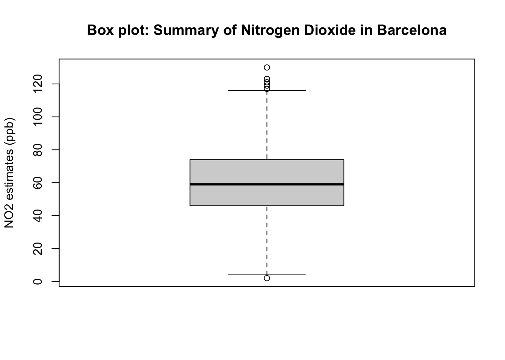
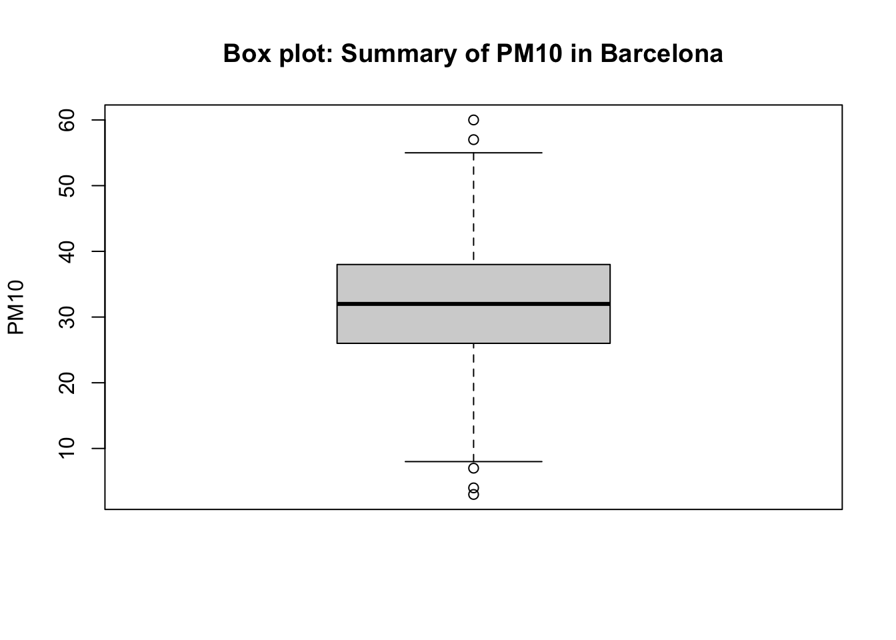

Week 4: Examining Data II
1 Central tendency measures
1.1 Learning outcomes
By the end of this tutorial, you will be able to:
- Understand what central tendency measures are for exploring data
- How to compute central tendency measures such as mean, and median
- How to compute range measures such as minimum, maximum and interquartile range
- How to compute measures of uncertainty surrounding the mean such as variance and standard deviation
- How to translate the central tendency and range measures visually as a box plot
Warning
We will using the same dataset from last week i.e., Barcelona_Air_Pollution_data.csv. If you have not already - you can download it from [HERE].
Instructions In your computer, do the following:
- Go to the folder named GEOG0186 - this should have been created in Week 2
- Next, create a new sub-folder within GEOG0186 and rename it as Week 4.
- From the downloaded folder Dataset for Week 3 (using last week’s dataset), make sure to unzip and transfer ALL the datasets directly to the Week 4 folder.
1.2 Short Lecture Videos [OPTIONAL]
The theory videos are lectures covering what central tendency measures, range values and measures for variability are. You are welcome to jump straight to the coding exercise by clicking HERE if you want to skip this section!
Central tendency measures contains a list of summary measurements that allows the user to summarize the data to some central measure and to gauge the spread of the data (i.e., errors/departures from central measure). It is best for continuous variables, we can hence compute the following summary measurements (watch video below see to definitions):
[Theory]: Central tendency measures (Length: 17:12 minutes)
Watch on YouTube LINK
[Theory]: Range values and interquartile ranges (Length: 18:32 minutes)
Watch on YouTube [LINK]
[Theory]: Variance & standard deviation (Length: 13:39 minutes)
Watch on YouTube [LINK]
1.3 Analysing air pollution data in Barcelona (Part II)
Here, we will focus on descriptive statistics - last week, we learnt how to do frequency distributions. Now, we are going to compute measure for central tendency and variability. in such data set. Doing these type of analysis we help us understand the distribution of the dataset more making the interpretation a lot easier.
Let’s begin!
1.3.1 Setting Working Directory & Reading a CSV File
Let us import for following dataset Barcelona_Air_Pollution_data.csv into RStudio, and call this object air_ quality_data.
Remember - always make sure that your work directory is linked to your folder containing your data.
For Windows:
setwd("C:/Users/accountName/Desktop/GEOG0186/Week 4")For Macs:
setwd("/Users/accountName/Desktop/GEOG0186/Week 4")Now, import you the data set as follows:
air_quality_data <- read.csv("Barcelona_Air_Pollution_data.csv")We are going to compute the following measures:
- Minimum and Maximum values
- Upper and Lower Quartiles (or Interquartile ranges)
- Mean
- Median
- Variance and Standard deviation
1.3.2 Range values I - Minimum and Maximum
The range values basically corresponds to extreme values in the dataset i.e., the lowest and highest that is present. You can use the functions min() and max() to report these extreme values.
min(air_quality_data$NO2_est)[1] 2max(air_quality_data$NO2_est)[1] 130The range is difference between the minimum and maximum value. R does not have a function for this, so you will have to compute it on your own:
max(air_quality_data$NO2_est) - min(air_quality_data$NO2_est)[1] 1281.3.3 Range values II - Quartiles and Interquartile Range
Divide a range of data into four equal parts (i.e., 100/4 parts = 25%). For example:
- Lower quartile: It’s the number below which lies the 25% of the bottom data.
- Median: Divides the range in the middle & has 50% of the data below it.
- Upper quartile: It has 75% of the data below it & the top 25% of the data above it.
This can be easily computed using the function quantile(, probs = c(0.25, 0.5, 0.75))
quantile(air_quality_data$NO2_est, probs = c(0.25, 0.5, 0.75))25% 50% 75%
46 59 74 You can compute the interquartile range (IQR) in R, which is the difference between the 3rd quartile (Q3) and the 1st quartile (Q1) using the IQR():
IQR(air_quality_data$NO2_est)[1] 281.3.4 Central Tendency Measure I: Mean
The mean is the average of a set of numbers — it’s found by adding up all the values and then dividing by the number of values. Its the most common statistic used to summarise continuous data! It is a central estimate. Computing the mean in R is very simple - all you have to do is use the mean() function.
mean(air_quality_data$NO2_est)[1] 59.69221.3.5 Central Tendency Measure II: Median
Like mean, the median is also a central estimate! However, The median is actually the middle-most value of a dataset when the values are arranged in order. Its the another common statistic used to summarise continuous data especially if it not following a normal distribution (which we will cover in week 6)! Computing a median in R is also very simple - all you have to do is use the median() function.
median(air_quality_data$NO2_est)[1] 59These descriptive estimates are easy to compute. Can be tedious if you will have to use all these functions! You can compute these measure of the fly as summaries by simply use the summary() function on the variable of interest (i.e., NO2_est from the original dataset).
# compute all descriptive summaries measurements
summary(air_quality_data$NO2_est) Min. 1st Qu. Median Mean 3rd Qu. Max.
2.00 46.00 59.00 59.69 74.00 130.00 As you can see using summary() automatically gives you almost all the summary estimates needed for interpretation. The NO\(_2\) air levels in Barcelona was 59.69ppb (with median 59.00pbb). The lowest and highest values are 2.0ppb and 130.0ppb, respectively (with 25th and 75th percentiles being 46.00ppb and 74.00pbb, respectively.)
1.3.6 Measure of variability: Standard Deviation
Finally, you can compute the standard deviation using the sd() function as follows:
# compute all descriptive summaries measurements
sd(air_quality_data$NO2_est)[1] 20.60876The standard deviation is ± 20.61pbb – this is the error around the mean of NO\(_2\) i.e., estimated as 59.69ppb. To visualise the distribution of a continuous variable – your ‘go-to’ plot is a boxplot. You can use the function boxplot() to generate one. Type the following to churn it:
# Box plot
boxplot(air_quality_data$NO2_est, ylab = "NO2 estimates (ppb)", main="Box plot: Summary of Nitrogen Dioxide in Barcelona")
The above box plot is essential the visual representation of the summary results churned by the summary(). Here is the concise interpretation of the above results:
Important
Interpretation: The overall mean air pollution levels for NO\(_2\) in Eixample (Barcelona) from 718 observation was 59.69ppb (with one SD of ±20.63ppb). 25% (at the lower end i.e., lower quartile) of the distribution for air population levels for Nitrogen Dioxide are below 46.00ppb (which is considered to cause low health impact); while from 75% onwards (i.e., upper quartile) of the distribution has air pollution levels of N0\(_2\) which is above 74.00pbb (which is consider to considered to cause some moderate health impact). The overall range in the distribution is 128ppb where the lowest observed value is 2.0ppb (minimum) and the highest observed value is 130ppb (maximum)
1.4 Exercise
- Carry out a full-on descriptive analysis for the PM10 variable in the
air_quality_datadata frame object. In your interpretation, you will need to report the following altogether:
- Mean
- Standard Deviation
- Median
- Interquartile ranges
- Minimum and Maximum values
Note
HINTS to consider: Use the summary(), sd() and IQR() functions to derive the desired statistical outputs for PM10 in the dataset.
- Generate a box plot using
boxplot()function to show the distribution PM10. Ensure that the image is fully annotated with title and y-titles.
Have a go at these questions before revealing the solution codes and output below
Click here to see solution code:
# Solutions for 1
# Using PM10 report all summary measures for mean, median minimum and maximum
summary(air_quality_data$PM10_est) Min. 1st Qu. Median Mean 3rd Qu. Max.
3.00 26.00 32.00 31.81 38.00 60.00 # Get the IQRs
quantile(air_quality_data$PM10_est, probs = c(0.25, 0.5, 0.75))25% 50% 75%
26 32 38 IQR(air_quality_data$PM10_est)[1] 12# show the SD
sd(air_quality_data$PM10_est)[1] 9.544946# show boxplot
boxplot(air_quality_data$PM10_est, ylab = "PM10", main="Box plot: Summary of PM10 in Barcelona")
Important
Interpretation: The overall mean of PM10 in Eixample (Barcelona) from 718 observation was 31.81 (with one SD of ±9.54). 25% (at the lower end i.e., lower quartile) of the distribution for this variable is below 26.00; while from 75% onwards (i.e., upper quartile) of the distribution is above 38.00. The overall range in the distribution is 57.00 where the lowest observed value is 3.0 (minimum) and the highest observed value is 60.0 (maximum)